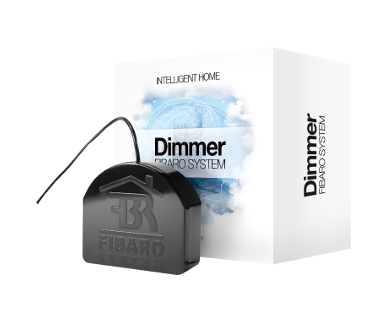
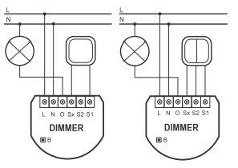
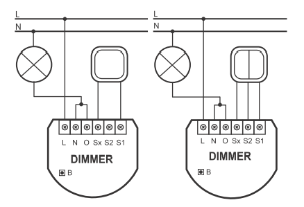

FIB_FGD-211
Universal Dimmer 500W Insert Module
Firmware Version
: 1.3
|
 |
Kurzinfo
Die Inklusion erfolgt durch dreifachen Schaltimpuls am steuernden analogen Lichtschalter oder alternativ durch
Einfachklick auf den kleinen Schalter am Gehäuse.
Weitergehende Informationen finden sich in den jeweiligen Abschnitten dieses Handbuches.
|
Produktbeschreibung
Der Fibar-Dimmereinsatz ermöglicht die Nachrüstung einer Standard-Elektroinstallation zu einem intelligenten
Z-Wave-basierten System zum Dimmen von Leuchten. Das Gerät wird in einer Wanddose direkt hinter dem dort bereits
befindlichen konventionellen Schalter platziert. Der Schalter schaltet den Verbraucher nun nicht mehr direkt,
sondern liefert nur noch ein Steuersignal zum Fibar-Gerät, das wiederum den Verbraucher steuert. Diese Steuerung
erfolgt entweder über den lokalen Schalter oder über Funk. Dieses Produkt funktioniert mit jeder Schalterserie und
jedem Design, wenn in der Einbaudose genügend Platz zur Installation vorhanden ist. In großen 60 mm tiefen Dosen
sollte dies regelmäßig der Fall sein. In kleineren Dosen (z.B. 45 mm) hängt die Einsatzmöglichkeit von der
benötigten Tiefe des konventionellen Schalters sowie vom Platzbedarf der gegebenenfalls ebenfalls in der
Dose befindlichen Elektroverbinder ab. Dieses Gerät kann in Dreileitersystemen oder in Zweileitersystemen
genutzt werden.
Installationsanleitung
Der Dimmereinsatz passt in normale Europäische Wanddosen mit 60 mm Durchmesser und ist mit 15 mm Höhe sehr klein, weshalb er
auch hinter einem traditionellen Wandschalter montiert werden kann. Dieser Wandschalter dient dann als externer Steuerschalter
zum Dimmen von Lasten - der Dimmer selbst ist im Einsatz realisiert.
Der Dimmer kann sowohl in einem Dreileiter- als auch in einem Zweileitersystem eingesetzt werden. In einem Dreileitersystem, wenn
sowohl N als auch L in der Dose verfügbar sind, werden beide Leiter direkt mit den Anschlussklemmen N und L
verbunden. Die Anschlussklemme O ist der dimmende Ausgang. Die nachstehende Schaltung wird im Dreileitersystem realisiert.

Im Zweileitersystem werden die Anschlusklemmen N und O gebrückt und mit dem, vom Sicherungskasten kommenden, Leiter verbunden.
Der zweite zur Leuchte gehende Leiter wird mit L verbunden. Es ist möglich, die beiden Leiter beim Anschluss an den Dimmereinsatz
miteinander zu vertauschen, ohne dass es zu Schäden an der Elektronik oder dem Leitungsnetz kommt. Die nachstehende Schaltung wird im
Zweileitersystem realisiert.

Es ist möglicht, aber nicht zwingend notwendig, eine lokale Bedienung des Dimmers durch einen direkt auf die Wanddose installierten
traditionellen Schalter zu realisieren. Dazu dienen die Anschlussklemmen S1, S2 und Sx.
Achtung: An diese Anschlussklemmen darf kein Netzstrom angelegt werden. Dies führt sofort zur Zerstörung des Dimmers.
Die lokale Steuerung kann durch einen einfachen Kippschalter (bistabil), einen Doppelkippschalter (bistabil), einen einfachen Taster
(monostabil) oder einen Doppeltaster (monostabil) erfolgen. Der angeschlossene Schaltertyp muss nach der Inklsuion über das Setzen des
Konfigurationsparameter 14 gewählt werden. Die Werkseinstellung lautet auf Taster. Der lokale Steuerschalter wird wie in den oben angegebenen
Schaltungen an den Dimmer angeschlossen. Sollte ein bistabiler Schalter angeschlossen werden, muss der Schalter ausgeschaltet bleiben, solange
der Dimmer nicht in das Z-Wave Netz inkludiert wurde.
Verhalten des Gerätes im Z-Wave Netz
I Im Auslieferungszustand ist das Gerät mit keinem
Z-Wave-Netz verbunden. Damit es mit anderen Z-Wave Geräten
kommunizieren kann, muss es in ein bestehendes Z-Wave Netz eingebunden werden. Dieser Prozess wird bei Z-Wave
Inklusion genannt. Geräte können Netzwerke auch wieder verlassen. Dieser Prozess heißt bei Z-Wave
Exklusion. Beide Prozesse werden von einem Controller gestartet, der dazu in einen Inklusion- bzw. Exklusion-Modus
geschaltet werden muss. Das Handbuch des Controllers enthält Informationen, wie er in diese Modi zu schalten
ist. Erst wenn der Controller des Z-Wave Netzes im Inclusion-Modus ist, können Geräte hinzugefügt werden.
Das Verlassen des Netzes durch Exklusion führt zum Rücksetzen dieses Gerätes in den Auslieferungszustand.
Das Gerät wird durch dreifachen Schaltimpuls am steuernden analogen Lichtschalter oder alternativ durch Einfachklick auf den
kleinen Schalter am Gehäuse inkludiert oder excludiert, je nachdem, ob sich der entsprechende Controller im Inklusion-Modus
oder Exklusion-Modus befindet.
Bedienung des Gerätes
Der Dimmereinsatz ermöglicht das Dimmen verschiedener Typen von Leuchten. Ein lokal angeschlossener konventioneller Schalter
kann den Dimmer direkt bedienen. Ist dieser Schalter ein konventioneller Tastschalter, wird mit jedem Tastimpuls der Dimmer entweder
hoch- oder heruntergedimmt. Bie Kipptastern erfolgt die Bedienung genauso, nur dass der Schalter nach betätigtem Schaltimpuls manuell wieder
in den Ausgangszustand AUS gesetzt werden muss.
Der Dimmereinsatz kann seinen Status an einen Controller senden (Kommunikationsart 2) und andere Aktoren steuern (Kommunikationsart 5).
Eine Steuerung des Dimmers ist von jedem Z-Wave Gerät aus möglich (Kommunikationsarten 1,4 und 7). Ein eventuell vorhandener zweiter Schalter
dient nicht der Steuerung des lokalen Dimmers, sondern nur der Fernsteuerung von anderen Aktoren nach Kommunikationsart 5.
Assoziationen - wie werden andere Geräte gesteuert?
A Z-Wave Geräte können andere Geräte direkt steuern. Diese direkte Steuerung heißt in
Z-Wave Assoziation. In den steuernden Geräten muss dazu die Geräte-ID des zu steuernden
Gerätes hinterlegt werden. Dies erfolgt in sogenannten Assoziationsgruppen. Eine
Assoziationsgruppe ist immer an ein Ereignis im steuernden Gerät gebunden (Tastendruck
oder Auslösen eines Sensors). Bei Eintritt dieses Ereignisses wird an alle in einer
Assoziationsgruppe hinterlegten Geräte ein Steuerkommando gesendet.
Assoziationsgruppen:
| 1 |
externer Schalter 1
(max. Anzahl Geräte: 16)
|
| 2 |
externer Schalter 2
(max. Anzahl Geräte: 16)
|
| 3 |
sendet alle Statusänderungen
(max. Anzahl Geräte: 1)
|
Konfigurationseinstellungen
Z-Wave Produkte können direkt nach der Inklusion im Netz verwendet werden. Durch
Konfigurationseinstellungen kann das Verhalten des Gerätes jedoch noch besser an die Anforderungen
der Anwendung angepasst und zusätzliche Funktionen aktiviert werden.
WICHTIG: Manche Steuerungen erlauben nur die Konfiguration von vorzeichenbehafteten Werten
zwischen -128 und 127. Um erforderliche Werte zwischen 128 und 255 zu programmieren, muss der gewünschte
Wert minus 256 eingegeben werden. Beispiel: um einen Parameter auf einen Wert von 200 zu setzen, müsste
der Wert 200-256 = -56 eingegeben werden, wenn nur positive Werte bis 128 akzeptiert werden. Bei Werten
von 2 Byte Länge wird die gleiche Logik angewandt: Werte über 32768 werden als negative Werte angegeben
Alles-Aus-Steuerung
(Parameternummer 1, Parametergröße 1)
definiert das Verhalten bei Alles-AUS- und Alles-AN-Befehlen
| Wert |
Beschreibung |
| 0 |
weder AUS noch EIN werden ausgeführt |
| 1 |
Nur AUS wird ausgeführt |
| 2 |
Nur EIN wird ausgeführt |
| 255 |
sowohl AUS als EIN werden ausgeführt
(Voreingestellt)
|
Kommandos die an Assoziationsgruppe 1 gesendet werden
(Parameternummer 6, Parametergröße 1)
Legt fest, welche Schaltoperation andere Geräte in Assoziationsgruppen steuert. Um die Doppelklcikfunktion zu unterstützen, muss Parameter 14 auf den Wert 1 gesetzt werden.
| Wert |
Beschreibung |
| 0 |
sowohl Einschalten als auch Ausschalten senden ein Funkkommando
(Voreingestellt)
|
| 1 |
Das Ausschalten sendet ein Funkkommando. Ein Doppelklick führt zum Einschalten aller Geräte, Dimmer kehren zu ihrem letzten Zustand zurück. |
| 2 |
Das Ausschalten sendet ein Funkkommando. Ein Doppelklick führt zum Einschalten aller Geräte, Dimmer dimmen auf 100 %. |
Prüfe Status des Gerätes, an das bei Betätigen von Schalter No2 ein Signal gesendet werden soll.
(Parameternummer 7, Parametergröße 1)
Wenn ein zweiter externer Schalter angeschlossen ist, kann dieser genutzt werden, um wietere Geräte zu steuern. Es wird festgelegt, ob dabei der Schaltzustand dieser Geräte vor Aussenden eines Schaltsignals geprüft wird.
| Wert |
Beschreibung |
| 0 |
Wird nicht geprüft. |
| 1 |
Wird geprüft.
(Voreingestellt)
|
Prozentaler Schritt beim automatischen Dimmen
(Parameternummer 8, Parametergröße 1)
Definiert um wieviel Prozent mit jedem Schritt bei automatischen Bedienung der Dimmerpegel geändert wird.
| Wert |
Beschreibung |
| 1
—
99 |
%
(Voreingestellt 1)
|
Laufzeit zwischen Dimmerendpegeln / manuelles Dimmen
(Parameternummer 9, Parametergröße 1)
Es wird die Zeit definiert, die der Dimmer beim manuellen Dimmen zwischen 0 % und 100 % Dimmerpegel braucht.
| Wert |
Beschreibung |
| 1
—
255 |
* 10 ms
(Voreingestellt 1)
|
Laufzeit zwischen Dimmerendpegeln / automatisches Dimmen
(Parameternummer 10, Parametergröße 1)
Es wird die Zeit definiert, die der Dimmer beim automatischen Dimmen zwischen 0 % und 100 % Dimmerpegel braucht.
| Wert |
Beschreibung |
| 1
—
255 |
* 10 ms
(Voreingestellt 1)
|
Prozentaler Schritt beim manuellen Dimmen
(Parameternummer 11, Parametergröße 1)
Definiert um wieviel Prozent mit jedem Schritt bei manueller Bedienung der Dimmerpegel geändert wird.
| Wert |
Beschreibung |
| 1
—
99 |
%
(Voreingestellt 1)
|
Maximaler Dimmerpegel
(Parameternummer 12, Parametergröße 1)
Definiert den maximal möglichen Dimmerpegel. Kann benutzt werden, um Flickern bei zu hohem Dimmerpegel zu vermeiden.
| Wert |
Beschreibung |
| 1
—
98 |
% |
Minimaler Dimmerpegel
(Parameternummer 13, Parametergröße 1)
Definiert den minimal möglichen Dimmerpegel. Kann benutzt werden, um Flickern bei zu geringem Dimmerpegel zu vermeiden.
| Wert |
Beschreibung |
| 1
—
98 |
%
(Voreingestellt 2)
|
Typ des externen Schalters
(Parameternummer 14, Parametergröße 1)
Es wird der Typ des externen Steuerschalters definiert.
| Wert |
Beschreibung |
| 0 |
Taster (mono-stabil)
(Voreingestellt)
|
| 1 |
Kippschalter (bistabil) |
Doppelklick
(Parameternummer 15, Parametergröße 1)
Aktiviert/Deaktiviert die Doppelclickfunktion - Dimmerlevel = 100 %.
| Wert |
Beschreibung |
| 0 |
Deaktiviert |
| 1 |
Aktiviert
(Voreingestellt)
|
Wiederherstellen des letzten Schaltzustandes nach Stromverlust
(Parameternummer 16, Parametergröße 1)
Dieser Parameter definiert, welcher Dimmerzustand nach einem Stromausfall eingenommen wird
| Wert |
Beschreibung |
| 0 |
aus |
| 1 |
letzter Dimmerpegel
(Voreingestellt)
|
Doppelter externer Schalter 1 für Treppenhausschaltung
(Parameternummer 17, Parametergröße 1)
Treppenhausschaltung ermöglicht die Doppelnutzung des externen Schalters 1. Dieser Dimmer kann zwei Kippschalter
oder eine unbegrenzte Anzahl von mit Tipptastern.
| Wert |
Beschreibung |
| 0 |
Deaktiviert
(Voreingestellt)
|
| 1 |
Aktiviert |
Abstimmung des Dimmerniveaus zwischen verschiedenen Dimmern
(Parameternummer 18, Parametergröße 1)
Diese Funktion ermöglich ein synchrones Dimmen mehrer Dimmer. Jede Änderung des Dimmerzustandes des Gerätes wird an alle anderen assoziierten Dimmer übertragen.
| Wert |
Beschreibung |
| 0 |
Deaktiviert
(Voreingestellt)
|
| 1 |
Aktiviert |
Definiert, wie mit externen bistabilen Kippschaltern gesteuert wird
(Parameternummer 19, Parametergröße 1)
Kippschalter verbleiben in einer Stellung. Es muss definiert werden, wie der Dimmer auf das Schalten eines solchen Kippschalters reagiert.
| Wert |
Beschreibung |
| 0 |
Das Einschalten erzeugt einen Schaltimpuls, der entweder ein -oder ausschaltet.
(Voreingestellt)
|
| 1 |
Schließen des external Schalter schaltet ein, Öffnen schaltet aus. |
Länge des Dimmersteuerimpulses
(Parameternummer 20, Parametergröße 1)
Diese Funktion ermöglicht das Verlängern des Dimmersteuerimpulses. Damit können Phasenverschiebungen durch kapazitive Lastne ausgeglichen und LED euchten gedimmt werden, so diese LED Leuchten eine Dimmfunktion überhaupt unterstützen.
| Wert |
Beschreibung |
| 100
—
170 |
variiert von Mitte der Halbwelle bis kurz hinter Nulldurchgang der Halbwelle
(Voreingestellt 110)
|
Technische Daten
| Stromversorgung |
230V ~50-60 Hz |
| Schaltbare Lasten |
25 ... 400 W, bei stark induktiven oder kapazitiven Lasten geringer. |
| Schutzklasse |
20 |
| Explorer Frames |
Ja |
| SDK |
4.52 |
| Geräteart |
Slave with routing capabilities |
| Allgemeiner Z-Wave-Gerätetyp |
Multilevel Switch |
| Spezieller Z-Wave-Gerätetyp |
Multilevel Power Switch |
| Router |
Ja |
| FLiRS |
Nein |
| Firmware Version |
1.3 |